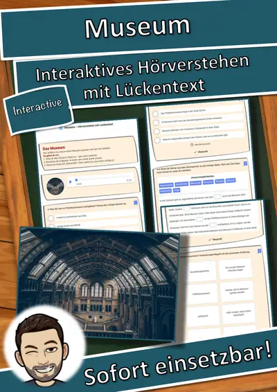

Ein Tag im Kunstmuseum – Lesespurgeschichte mit Rätselaufgaben (Klasse 3)
Ein Tag im Kunstmuseum – Lesespurgeschichte Kunst (Klasse 3/4)Begib dich mit deiner Klasse auf eine spannende Lesespur durch ein Kunstmuseum! Hedda und Juri verbringen einen ganzen Tag im Museum und entdecken, dass Kunst alles andere als langweilig ist: An der Museumskasse lernen sie die wichtigsten Regeln kennen, im Porträtsaal, im Landschaftssaal und im Stilllebenraum unterscheiden sie verschiedene Bildarten, und im Skulpturenhof gehen sie um Figuren herum. In der Restaurierwerkstatt schauen sie einer Restauratorin über die Schulter, im Farbsaal staunen sie über abstrakte Bilder, im Museumsdepot sehen sie, wo die vielen anderen Bilder lagern, und auf der Schaubank betrachten sie ein Bild ganz genau. Im Kinderatelier gestalten sie am Ende ihre eigene kleine Ausstellung. Ihr Bilderrahmen Rahmi ist immer dabei. Am Ende jedes Abschnitts verrät ein Hinweis den nächsten Ort auf dem Museumsplan – nur wer richtig liest und mitdenkt, findet den Weg und sammelt alle geheimen Buchstaben zum Lösungswort.
Die perfekte Lesespur für den KUNSTUNTERRICHT der 3. und 4. Klasse – ideal zur Vorbereitung eines Museumsbesuchs: Sie verbindet motivierendes, sinnentnehmendes Lesen mit Grundwissen über Bildarten und schult das genaue Hinschauen. Das Material ist SOFORT EINSETZBAR und in DREI DIFFERENZIERUNGSSTUFEN (leicht ★ / mittel ★★ / schwer ★★★) angelegt.WICHTIG: Das komplette Material ist sowohl in FARBE als auch in SCHWARZ-WEISS enthalten – ideal zum Sparen von Druckkosten.DAS IST ENTHALTEN
- Lesespurgeschichte in 3 Niveaus (leicht, mittel, schwer)
- farbiger Museumsplan als Suchkarte
- Hörverstehen mit QR-Code zur MP3 (selbstständiges Hören mit Kopfhörern)
- vier Aufträge auf dem Weg: ein Verbinde-Rätsel, ein Quiz, eine Rechenaufgabe im Zahlenraum bis 100 und ein Steckbrief
- Rätselseite (Wörter-Suchsel + Wissensfragen)
- Ausmalbild zum Thema
- ausführliches Lösungsblatt für die Lehrkraft
- alles zusätzlich als komplette Schwarz-Weiß-VarianteSO GEHT DIE LESESPURDie Kinder lesen ab START, finden im Text einen Hinweis auf einen Ort im Museum, suchen ihn auf dem Plan und lesen bei dieser Station weiter. An jeder richtigen Station gibt es einen Sammelbuchstaben. Eingebaute Sackgassen (Garderobe, Café, Aufzug, Museumsshop) gehören zwar zum Museum, sind aber keine Stationen und dienen der Selbstkontrolle. Am Ende werden die gesammelten Buchstaben umgestellt und ergeben ein geheimes Lösungswort. (Die Lösungen sind selbstverständlich nur im Lösungsblatt für die Lehrkraft enthalten.)INHALTLICHER SCHWERPUNKTDie Kinder lernen Verhaltensregeln im Museum kennen, unterscheiden Porträt, Landschaft, Stillleben, Skulptur und abstraktes Bild, erfahren, was Restauratorinnen tun und warum viele Werke im Depot lagern, und üben die Bildbetrachtung mit den Fragen „Was sehe ich? Was fühle ich? Was denke ich?“.ABGEDECKTER LEHRPLAN (Klasse 3/4, Kunst)
- Kunst (LehrplanPLUS Bayern) – Klasse 3/4 „Kunstwerke betrachten und darüber sprechen“: Verhaltensregeln im Museum kennen, Porträt, Landschaft, Stillleben, Skulptur und abstraktes Bild unterscheiden, Kunstwerke genau betrachten, beschreiben und deuten sowie eigene Bilder ausstellen und vorstellen.
- Deutsch – Lesen: Texte sinnentnehmend lesen, Informationen gezielt entnehmen; Sprechen und Zuhören: einem Hörtext konzentriert folgen (Hörverstehen mit MP3), über Bilder sprechen.
- Mathematik – Rechnen im Zahlenraum bis 100.
- Fächerübergreifend / Kompetenzen: Heimat- und Sachunterricht (Orte in der Stadt), genaues Lesen und Prüfen, kreatives Gestalten (Ausmalbild).
Geeignet für Freiarbeit, Stationenlernen, Vertretungsstunden, Wochenplan, Projekttage und Homeschooling. Klassenstufe 3/4.
Ähnliche Materialien

Ein eigenes Spiel programmieren – Figuren, Regeln, Punkte – Lesespurgeschichte mit Rätselaufgaben (Klasse 7)

Expressionismus – Farbe als Gefühl – Lesespurgeschichte mit Rätselaufgaben (Klasse 10)

Abstrakte Kunst – Bilder ohne Gegenstand – Lesespurgeschichte mit Rätselaufgaben (Klasse 7)

Paul Klee – mit Linien spazieren gehen – Lesespurgeschichte mit Rätselaufgaben (Klasse 3)

Museum – Hörverstehen mit Lückentext (interaktiv)

Museum Lückentext mit Wortspeicher Hörverstehen und Suchsel

Juri Gagarin Lückentext mit Wortspeicher Hörverstehen und Suchsel